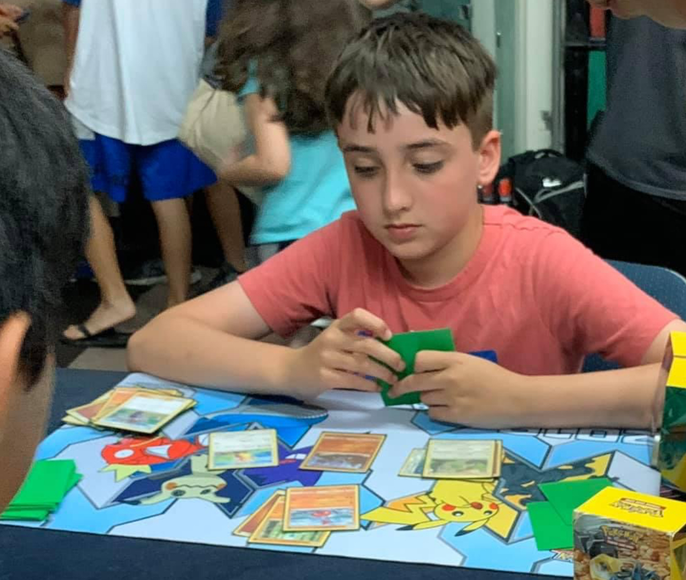
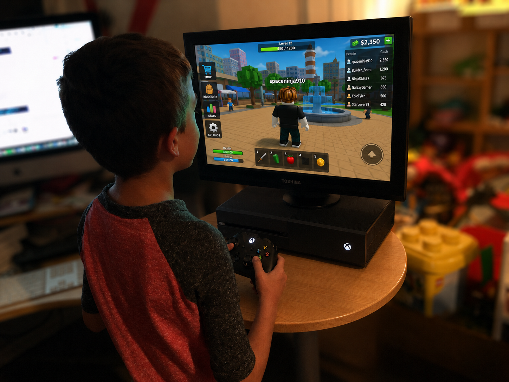
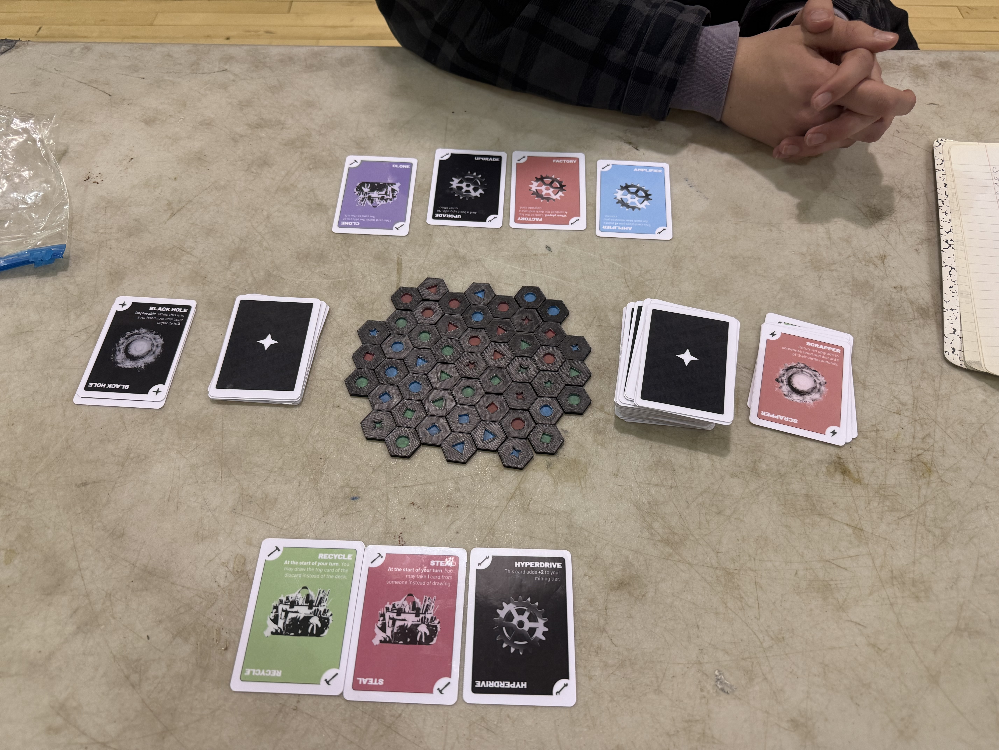
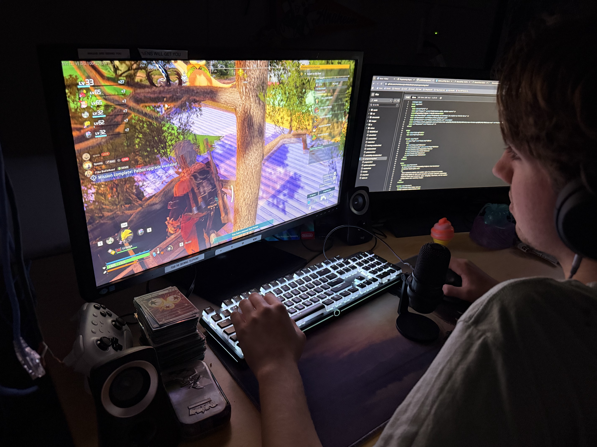

Story • 5 minute read
Curious about systems. Passionate about building better ones.
Looking back, I can see the questions changing. At first, I only cared about playing. Then I started wondering why some games kept pulling me back and how people built them.

Prologue • Ages 3–8
Where it started.
Some of my earliest memories are tied to games: Super Mario Bros., Disney Infinity, Mario Kart, Animal Crossing, and Exploding Kittens. At that age, I was not analyzing mechanics. I just knew I liked discovering what happened next, figuring out the rules, and trying different ways to play.
Before I wanted to design games, I mostly wanted to see what would happen if I tried something different.
Chapter One
Age 8 • 2018
Discovering Strategy
At eight, I was definitely not thinking about “systems design.” I just knew I liked games that made me want to try again. Pokémon made me notice that two players could use the same cards in completely different ways.
Games got more interesting when I started asking why one choice worked better than another.

Chapter Two
Age 9 • 2019
Discovering Competition
Traveling to tournaments showed me that competition was only part of it. I met players who looked at the same cards and matchups in completely different ways. I also learned that a good plan is useful right up until your opponent does something you did not expect.
There is usually more than one way to solve a problem.

Chapter Three
Age 10 • 2020
Learning from Setbacks
I qualified for the Pokémon World Championships in London, but the event was cancelled during the COVID-19 pandemic. It was disappointing. Still, the cancellation did not erase the work it took to qualify or make me less interested in competing.
Keep building, even when the path changes.

Chapter Four
Ages 10–12 • 2020–2022
From Player to Builder
Roblox and Minecraft gave me places to build things instead of only playing them. I made my own spaces, changed layouts, and tested ideas. Most of them were not finished games, but they made me wonder why some worlds were fun to explore and others felt empty.
The fastest way for me to understand something is usually to try building it.

Chapter Five
Ages 13–14 • 2023–2024
Becoming Curious
As I got older, I noticed I was asking different questions. I still wanted to win, but I also wanted to know why certain strategies became popular, how players found counters, and why one small rule change could affect almost everything.
I became as interested in understanding the game as I was in winning it.

Chapter Six
Age 15 • 2025
Designing My Own Game
Meteor Mayhem was my first attempt to design a full strategy game from the ground up. I made the rules, cards, resources, upgrades, and hazards, then tested it with friends, classmates, family, and people from the local gaming community. They found problems I never would have found by playing against myself.
The first version answers a question. The next versions make it worth playing.

Chapter Seven
Senior Year • Today
Just Getting Started
In August 2025, I began the Cybersecurity & Information Protection share-time program during my junior year. Since then, I have been learning programming, cybersecurity, and technical problem-solving while continuing to explore game design and interactive systems.
Curious about systems. Passionate about building better ones.

Continue exploring.
Some projects started with a question. Others started with me trying something just to see whether it would work. Looking back, I don't think I was collecting projects. I was collecting questions. Each one gave me a better question to ask next.